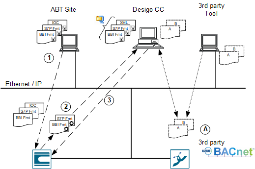
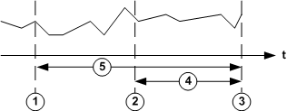

BACnet Backup and Restore
BACnet Backup and Restore uploads saved program data (application program) for a BACnet device to the management platform and then restore it as needed to the same or a new BACnet device.

Legend for BACnet Backup and Restore Procedure. | |
| Description |
1 | Load the application with ABT Site to the Desigo automation station. |
2 | Uses the management platform to upload the Backup BACnet Devices application. The BBI and S7P files are updated prior to uploading to the automation station. |
3 | Uses the management platform to upload the Backup BACnet Devices application in the Desigo automation station. |
A | NOTE:Backup and Restore can be executed only if the third-party BACnet devices support this process. A Desigo backup file cannot be loaded to a third-party device or vice versa. |
Legend for BACnet Backup and Restore Symbols. | |
Element | Description |
Saves data (computer, automation station). | |
Creates file. | |
IOC | The IO Configuration file is used differently depending on device type. |
BBI | Includes BACnet descriptive information on individual BACnet objects. |
S7 | Includes the entire program for the automation station. |

NOTE 1:
‒ The BACnet Backup and Restore function can only be used for Desigo devices if a node setup is run in advance using ABT Site.
NOTE 2:
A Desigo backup cannot be loaded to a third-party device.
NOTE 3:
A third-party backup cannot be loaded on a Desigo automation station.
NOTE 4:
You must first restore the parameters using ABT Site prior to making changes to the application program to prevent a loss of data. Otherwise, inconsistencies with the Program Modification Time will occur, and the parameter can no longer be restored. As a result, parameters edited during runtime are lost.
As part of the backup, all program-technical information as well as valid data to this point are uploaded, including:
- Program block structure
- Current parameters
- Scheduler programs
- Notification classes
- Trend log object references (Trend log data is not saved; it is normally uploaded by the Trend).
Restrictions for Trend Data
When restoring values, the values valid at the time of the backup are uploaded in the automation station.
- Any values that change, for example operating hours, are reset to data backup values.
- On the trend log object, the data buffer becomes empty through loading. If you did not previously upload data in the trend log buffer, the data is lost irretrievably.

Legend for Trend Data Lost. | |
| Description |
1 | Time of last data backup using BACnet Backup and Restore. |
2 | Time of last trend data upload from the trend log object. |
3 | Time of restoration in the automation station. |
4 | Missing trend data in the database between time period 2 and 3. |
5 | Possible data loss in the automation station regarding operating hours and changed data between time period 1 and 3. |
NOTICE

Data Loss
Prior to uploading using the BACnet Backup and Restore function, do the following:
1. Manually upload trend data to the management platform.
2. Load automation station.